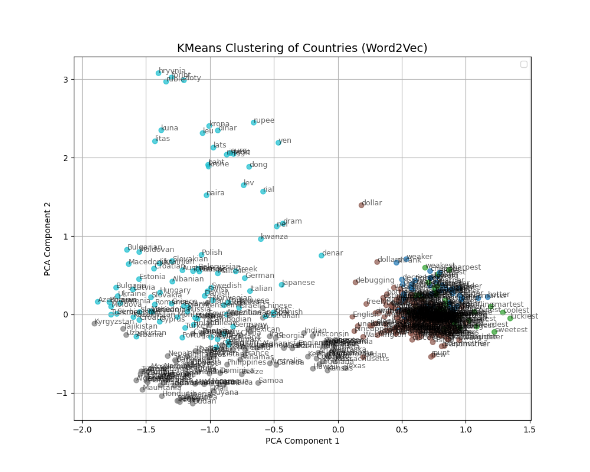
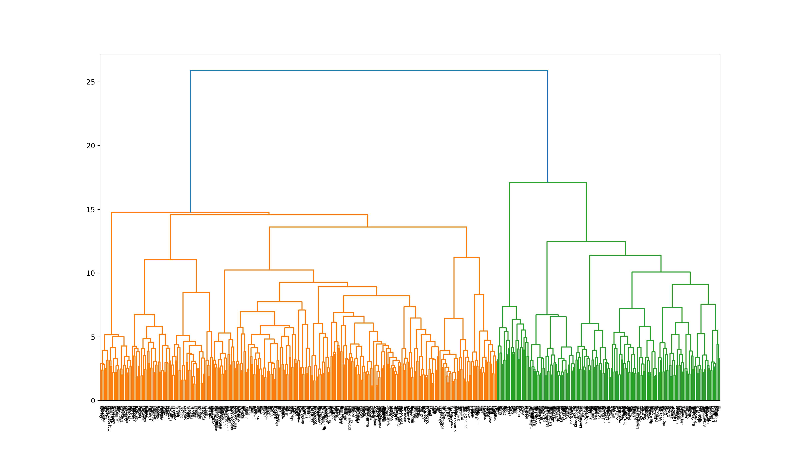
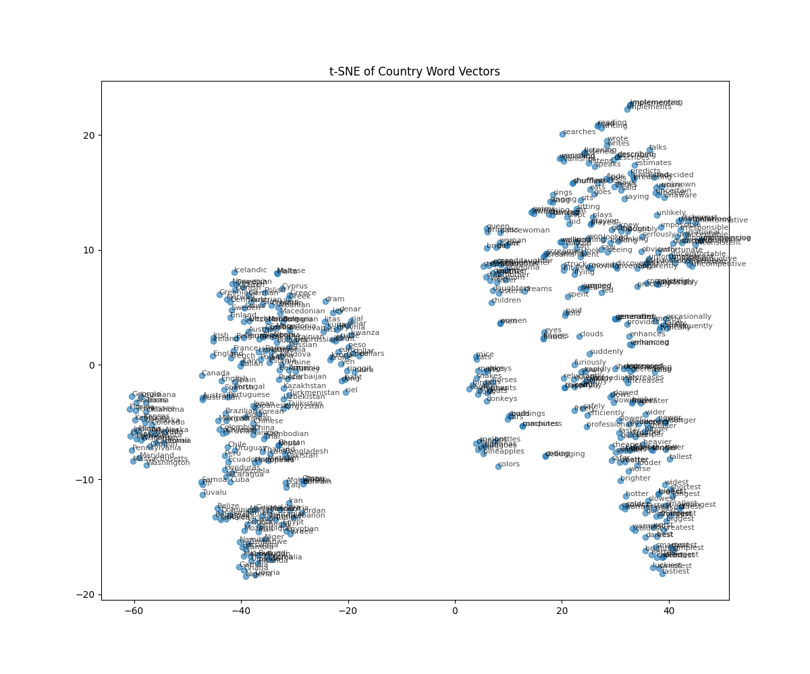

第6章: 単語ベクトル#
単語の意味を実ベクトルで表現する単語ベクトル (単語埋め込み) に関して, 以下の処理を行うプログラムを作成せよ.
Warning
本章は, code-cell ではなく, Markdown のコードブロック内にコードを記述しているため, Google Colab上で直接実行できません.
単語の意味を実ベクトルで表現する単語ベクトル (単語埋め込み) に関して, 以下の処理を行うプログラムを作成せよ.
50. 単語ベクトルの読み込みと表示#
Google Newsデータセット (約1,000億単語) での学習済み単語ベクトル (300万単語・フレーズ, 300次元) をダウンロードし, "United States"の単語ベクトルを表示せよ. ただし, "United States"は内部的には"United_States"と表現されていることに注意せよ.
from gensim.models import KeyedVectors
import numpy as np
def cos_sim(v1, v2):
return np.dot(v1, v2) / (np.linalg.norm(v1) * np.linalg.norm(v2))
model = KeyedVectors.load_word2vec_format("GoogleNews-vectors-negative300.bin.gz", binary=True)
print(model["United_States"])
[-3.61328125e-02 -4.83398438e-02 2.35351562e-01 1.74804688e-01
-1.46484375e-01 -7.42187500e-02 -1.01562500e-01 -7.71484375e-02
1.09375000e-01 -5.71289062e-02 -1.48437500e-01 -6.00585938e-02
1.74804688e-01 -7.71484375e-02 2.58789062e-02 -7.66601562e-02
-3.80859375e-02 1.35742188e-01 3.75976562e-02 -4.19921875e-02
-3.56445312e-02 5.34667969e-02 3.68118286e-04 -1.66992188e-01
-1.17187500e-01 1.41601562e-01 -1.69921875e-01 -6.49414062e-02
-1.66992188e-01 1.00585938e-01 1.15722656e-01 -2.18750000e-01
-9.86328125e-02 -2.56347656e-02 1.23046875e-01 -3.54003906e-02
-1.58203125e-01 -1.60156250e-01 2.94189453e-02 8.15429688e-02
6.88476562e-02 1.87500000e-01 6.49414062e-02 1.15234375e-01
-2.27050781e-02 3.32031250e-01 -3.27148438e-02 1.77734375e-01
-2.08007812e-01 4.54101562e-02 -1.23901367e-02 1.19628906e-01
7.44628906e-03 -9.03320312e-03 1.14257812e-01 1.69921875e-01
-2.38281250e-01 -2.79541016e-02 -1.21093750e-01 2.47802734e-02
7.71484375e-02 -2.81982422e-02 -4.71191406e-02 1.78222656e-02
-1.23046875e-01 -5.32226562e-02 2.68554688e-02 -3.11279297e-02
-5.59082031e-02 -5.00488281e-02 -3.73535156e-02 1.25976562e-01
5.61523438e-02 1.51367188e-01 4.29687500e-02 -2.08007812e-01
-4.78515625e-02 2.78320312e-02 1.81640625e-01 2.20703125e-01
-3.61328125e-02 -8.39843750e-02 -3.69548798e-05 -9.52148438e-02
-1.25000000e-01 -1.95312500e-01 -1.50390625e-01 -4.15039062e-02
1.31835938e-01 1.17675781e-01 1.91650391e-02 5.51757812e-02
-9.42382812e-02 -1.08886719e-01 7.32421875e-02 -1.15234375e-01
8.93554688e-02 -1.40625000e-01 1.45507812e-01 4.49218750e-02
-1.10473633e-02 -1.62353516e-02 4.05883789e-03 3.75976562e-02
-6.98242188e-02 -5.46875000e-02 2.17285156e-02 -9.47265625e-02
4.24804688e-02 1.81884766e-02 -1.73339844e-02 4.63867188e-02
-1.42578125e-01 1.99218750e-01 1.10839844e-01 2.58789062e-02
-7.08007812e-02 -5.54199219e-02 3.45703125e-01 1.61132812e-01
-2.44140625e-01 -2.59765625e-01 -9.71679688e-02 8.00781250e-02
-8.78906250e-02 -7.22656250e-02 1.42578125e-01 -8.54492188e-02
-3.18359375e-01 8.30078125e-02 6.34765625e-02 1.64062500e-01
-1.92382812e-01 -1.17675781e-01 -5.41992188e-02 -1.56250000e-01
-1.21582031e-01 -4.95605469e-02 1.20117188e-01 -3.83300781e-02
5.51757812e-02 -8.97216797e-03 4.32128906e-02 6.93359375e-02
8.93554688e-02 2.53906250e-01 1.65039062e-01 1.64062500e-01
-1.41601562e-01 4.58984375e-02 1.97265625e-01 -8.98437500e-02
3.90625000e-02 -1.51367188e-01 -8.60595703e-03 -1.17675781e-01
-1.97265625e-01 -1.12792969e-01 1.29882812e-01 1.96289062e-01
1.56402588e-03 3.93066406e-02 2.17773438e-01 -1.43554688e-01
6.03027344e-02 -1.35742188e-01 1.16210938e-01 -1.59912109e-02
2.79296875e-01 1.46484375e-01 -1.19628906e-01 1.76757812e-01
1.28906250e-01 -1.49414062e-01 6.93359375e-02 -1.72851562e-01
9.22851562e-02 1.33056641e-02 -2.00195312e-01 -9.76562500e-02
-1.65039062e-01 -2.46093750e-01 -2.35595703e-02 -2.11914062e-01
1.84570312e-01 -1.85546875e-02 2.16796875e-01 5.05371094e-02
2.02636719e-02 4.25781250e-01 1.28906250e-01 -2.77099609e-02
1.29882812e-01 -1.15722656e-01 -2.05078125e-02 1.49414062e-01
7.81250000e-03 -2.05078125e-01 -8.05664062e-02 -2.67578125e-01
-2.29492188e-02 -8.20312500e-02 8.64257812e-02 7.61718750e-02
-3.66210938e-02 5.22460938e-02 -1.22070312e-01 -1.44042969e-02
-2.69531250e-01 8.44726562e-02 -2.52685547e-02 -2.96630859e-02
-1.68945312e-01 1.93359375e-01 -1.08398438e-01 1.94091797e-02
-1.80664062e-01 1.93359375e-01 -7.08007812e-02 5.85937500e-02
-1.01562500e-01 -1.31835938e-01 7.51953125e-02 -7.66601562e-02
3.37219238e-03 -8.59375000e-02 1.25000000e-01 2.92968750e-02
1.70898438e-01 -9.37500000e-02 -1.09375000e-01 -2.50244141e-02
2.11914062e-01 -4.44335938e-02 6.12792969e-02 2.62451172e-02
-1.77734375e-01 1.23046875e-01 -7.42187500e-02 -1.67968750e-01
-1.08886719e-01 -9.04083252e-04 -7.37304688e-02 5.49316406e-02
6.03027344e-02 8.39843750e-02 9.17968750e-02 -1.32812500e-01
1.22070312e-01 -8.78906250e-03 1.19140625e-01 -1.94335938e-01
-6.64062500e-02 -2.07031250e-01 7.37304688e-02 8.93554688e-02
1.81884766e-02 -1.20605469e-01 -2.61230469e-02 2.67333984e-02
7.76367188e-02 -8.30078125e-02 6.78710938e-02 -3.54003906e-02
3.10546875e-01 -2.42919922e-02 -1.41601562e-01 -2.08007812e-01
-4.57763672e-03 -6.54296875e-02 -4.95605469e-02 2.22656250e-01
1.53320312e-01 -1.38671875e-01 -5.24902344e-02 4.24804688e-02
-2.38281250e-01 1.56250000e-01 5.83648682e-04 -1.20605469e-01
-9.22851562e-02 -4.44335938e-02 3.61328125e-02 -1.86767578e-02
-8.25195312e-02 -8.25195312e-02 -4.05273438e-02 1.19018555e-02
1.69921875e-01 -2.80761719e-02 3.03649902e-03 9.32617188e-02
-8.49609375e-02 1.57470703e-02 7.03125000e-02 1.62353516e-02
-2.27050781e-02 3.51562500e-02 2.47070312e-01 -2.67333984e-02]
# !pip install gdown
# !gdown https://drive.google.com/uc?id=0B7XkCwpI5KDYNlNUTTlSS21pQmM
# !pip install gensim
# !pip install google
51. 単語の類似度#
"United States"と"U.S."のコサイン類似度を計算せよ.
from gensim.models import KeyedVectors
import numpy as np
def cos_sim(v1, v2):
return np.dot(v1, v2) / (np.linalg.norm(v1) * np.linalg.norm(v2))
model = KeyedVectors.load_word2vec_format("GoogleNews-vectors-negative300.bin.gz", binary=True)
vec1 = model["United_States"]
vec2 = model["U.S."]
cs = cos_sim(vec1, vec2)
print(f"Cosine similarity: {cs}")
Cosine similarity: 0.7310774922370911
52. 類似度の高い単語10件#
"United States"とコサイン類似度が高い10語と, その類似度を出力せよ.
from gensim.models import KeyedVectors
import numpy as np
def cos_sim(v1, v2):
return np.dot(v1, v2) / (np.linalg.norm(v1) * np.linalg.norm(v2))
model = KeyedVectors.load_word2vec_format("GoogleNews-vectors-negative300.bin.gz", binary=True)
sim_list = model.most_similar("United_States", topn=10)
print(sim_list)
[('Unites_States', 0.7877248525619507), ('Untied_States', 0.7541370987892151), ('United_Sates', 0.7400724291801453), ('U.S.', 0.7310774326324463), ('theUnited_States', 0.6404393911361694), ('America', 0.6178410053253174), ('UnitedStates', 0.6167312264442444), ('Europe', 0.6132988929748535), ('countries', 0.6044804453849792), ('Canada', 0.601906955242157)]
53. 加法構成性によるアナロジー#
"Spain"の単語ベクトルから"Madrid"のベクトルを引き, "Athens"のベクトルを足したベクトルを計算し, そのベクトルと類似度の高い10語とその類似度を出力せよ.
from gensim.models import KeyedVectors
import numpy as np
def cos_sim(v1, v2):
return np.dot(v1, v2) / (np.linalg.norm(v1) * np.linalg.norm(v2))
model = KeyedVectors.load_word2vec_format("GoogleNews-vectors-negative300.bin.gz", binary=True)
sim_list = model.most_similar(positive=["Spain", "Athens"], negative=["Madrid"], topn=10)
print(sim_list)
[('Greece', 0.6898480653762817), ('Aristeidis_Grigoriadis', 0.560684859752655), ('Ioannis_Drymonakos', 0.5552908778190613), ('Greeks', 0.545068621635437), ('Ioannis_Christou', 0.5400862097740173), ('Hrysopiyi_Devetzi', 0.5248445272445679), ('Heraklio', 0.5207759737968445), ('Athens_Greece', 0.516880989074707), ('Lithuania', 0.5166865587234497), ('Iraklion', 0.5146791338920593)]
54. アナロジーデータでの実験#
単語アナロジーの評価データをダウンロードし, 国と首都に関する事例（: capital-common-countriesセクション）に対して、vec(2列目の単語) - vec(1列目の単語) + vec(3列目の単語)を計算し, そのベクトルと類似度が最も高い単語と, その類似度を求めよ. 求めた単語と類似度は, 各事例と一緒に記録せよ.
# !wget http://download.tensorflow.org/data/questions-words.txt
from gensim.models import KeyedVectors
from tqdm import tqdm
import pandas as pd
df = pd.read_csv("questions-words.txt", header=None, delim_whitespace=True, comment=':')
model = KeyedVectors.load_word2vec_format("GoogleNews-vectors-negative300.bin.gz", binary=True)
text = ""
for i in tqdm(range(len(df)), desc="Progress"):
sim = model.most_similar(positive=[df[1][i], df[2][i]], negative=[df[0][i]], topn=1)
text += f"{df[3][i]} => {sim[0][0]} (Similarity: {sim[0][1]})\n"
with open("record.txt", "w") as f:
f.write(text)
with open("record.txt", "r") as f:
for _ in range(10):
print(f.readline().strip())
capital-common-countries Athens Greece Baghdad Iraq Iraqi 0.635187
capital-common-countries Athens Greece Bangkok Thailand Thailand 0.713767
capital-common-countries Athens Greece Beijing China China 0.723578
capital-common-countries Athens Greece Berlin Germany Germany 0.673462
capital-common-countries Athens Greece Bern Switzerland Switzerland 0.491975
capital-common-countries Athens Greece Cairo Egypt Egypt 0.752781
capital-common-countries Athens Greece Canberra Australia Australia 0.583733
capital-common-countries Athens Greece Hanoi Vietnam Viet_Nam 0.627634
capital-common-countries Athens Greece Havana Cuba Cuba 0.646099
capital-common-countries Athens Greece Helsinki Finland Finland 0.689998
55. アナロジータスクでの正解率#
54の実行結果を用い, 意味的アナロジー (semantic analogy) と文法的アナロジー (syntactic analogy) の正解率を測定せよ.
from gensim.models import KeyedVectors
import pandas as pd
df = pd.read_table("record.txt", delim_whitespace=True, header=None, names=["category", "wordA1", "wordA2", "wordB1", "true", "pred", "sim"])
df["correct"] = df["true"] == df["pred"]
semantic_categories = [
"capital-common-countries",
"capital-world",
"currency",
"city-in-state",
"family"
]
syntactic_categories = [
"gram1-adjective-to-adverb",
"gram2-opposite",
"gram3-comparative",
"gram4-superlative",
"gram5-present-participle",
"gram6-nationality-adjective",
"gram7-past-tense",
"gram8-plural",
"gram9-plural-verbs"
]
semantic_df = df[df["category"].isin(semantic_categories)]
semantic_accuracy = semantic_df["correct"].mean() if len(semantic_df) > 0 else 0
semantic_correct = semantic_df["correct"].sum()
semantic_total = len(semantic_df)
syntactic_df = df[df["category"].isin(syntactic_categories)]
syntactic_accuracy = syntactic_df["correct"].mean() if len(syntactic_df) > 0 else 0
syntactic_correct = syntactic_df["correct"].sum()
syntactic_total = len(syntactic_df)
overall_accuracy = df["correct"].mean()
overall_correct = df["correct"].sum()
overall_total = len(df)
print(f"Semantic Analogy Accuracy: {semantic_accuracy:.4f} ({semantic_correct}/{semantic_total})")
print(f"Syntactic Analogy Accuracy: {syntactic_accuracy:.4f} ({syntactic_correct}/{syntactic_total})")
print(f"Overall Accuracy: {overall_accuracy:.4f} ({overall_correct}/{overall_total})")
print("\nAccuracy by category:")
category_accuracy = df.groupby("category")["correct"].agg(["mean", "sum", "count"])
category_accuracy.columns = ["Accuracy", "Correct", "Total"]
print(category_accuracy)
Semantic Analogy Accuracy: 0.7359 (14382/19544)
Syntactic Analogy Accuracy: 0.0000 (0/0)
Overall Accuracy: 0.7359 (14382/19544)
Accuracy by category:
Accuracy Correct Total
category
capital-common-countries 0.735878 14382 19544
56. WordSimilarity-353での評価#
The WordSimilarity-353 Test Collectionの評価データをダウンロードし, 単語ベクトルにより計算される類似度のランキングと, 人間の類似度判定のランキングの間のスピアマン相関係数を計算せよ.
# !wget https://www.gabrilovich.com/resources/data/wordsim353/wordsim353.zip
# !unzip wordsim353.zip
from gensim.models import KeyedVectors
import numpy as np
import pandas as pd
def cos_sim(v1, v2):
return np.dot(v1, v2) / (np.linalg.norm(v1) * np.linalg.norm(v2))
df = pd.read_csv("combined.csv")
words1 = df["Word 1"]
words2 = df["Word 2"]
human_scores = df["Human (mean)"]
model = KeyedVectors.load_word2vec_format("GoogleNews-vectors-negative300.bin.gz", binary=True)
vec_scores = []
for word1, word2 in zip(words1, words2):
vec1 = model[word1]
vec2 = model[word2]
sim = cos_sim(vec1, vec2)
vec_scores.append(sim)
df["cos_sim"] = vec_scores
print(f"Corr: {df[['Human (mean)', 'cos_sim']].corr(method='spearman')}")
Corr: Human (mean) cos_sim
Human (mean) 1.000000 0.700017
cos_sim 0.700017 1.000000
57. k-meansクラスタリング#
国名に関する単語ベクトルを抽出し, k-meansクラスタリングをクラスタ数k=5として実行せよ.
from gensim.models import KeyedVectors
from sklearn.cluster import KMeans
import matplotlib.pyplot as plt
from sklearn.decomposition import PCA
import numpy as np
import pandas as pd
model = KeyedVectors.load_word2vec_format("GoogleNews-vectors-negative300.bin.gz", binary=True)
df = pd.read_csv("questions-words.txt", header=None, names=["col1", "col2", "col3", "col4"], delim_whitespace=True, comment=':')
countries = df["col4"].unique()
vec = []
for country in countries:
vec.append(model[country])
X = np.array(vec)
km = KMeans(n_clusters=5, random_state=0)
y_km = km.fit_predict(X)
pca = PCA(n_components=2)
X_pca = pca.fit_transform(X)
plt.figure(figsize=(10, 8))
scatter = plt.scatter(X_pca[:, 0], X_pca[:, 1], c=y_km, cmap='tab10', alpha=0.7)
plt.title("KMeans Clustering of Countries (Word2Vec)", fontsize=14)
plt.xlabel("PCA Component 1")
plt.ylabel("PCA Component 2")
for i, country in enumerate(countries):
plt.text(X_pca[i, 0], X_pca[i, 1], country, fontsize=9, alpha=0.6)
plt.legend()
plt.grid(True)
plt.savefig("k.png")
plt.show()

58. Ward法によるクラスタリング#
国名に関する単語ベクトルに対し, Ward法による階層型クラスタリングを実行せよ.さらに, クラスタリング結果をデンドログラムとして可視化せよ.
from gensim.models import KeyedVectors
from scipy.cluster.hierarchy import dendrogram, linkage
import matplotlib.pyplot as plt
import numpy as np
import pandas as pd
model = KeyedVectors.load_word2vec_format("GoogleNews-vectors-negative300.bin.gz", binary=True)
df = pd.read_csv("questions-words.txt", header=None, names=["col1", "col2", "col3", "col4"], delim_whitespace=True, comment=':')
countries = df["col4"]
vec = []
for country in countries:
vec.append(model[country])
X = np.array(vec)
linkage_result = linkage(X, method='ward', metric='euclidean')
plt.figure(num=None, figsize=(16, 9), dpi=200, facecolor='w', edgecolor='k')
dendrogram(linkage_result, labels=countries)
plt.savefig("ward.png")
plt.show()

59. t-SNEによる可視化#
ベクトル空間上の国名に関する単語ベクトルをt-SNEで可視化せよ.
from gensim.models import KeyedVectors
from sklearn.manifold import TSNE
import matplotlib.pyplot as plt
import numpy as np
import pandas as pd
model = KeyedVectors.load_word2vec_format("GoogleNews-vectors-negative300.bin.gz", binary=True)
df = pd.read_csv("questions-words.txt", header=None, names=["col1", "col2", "col3", "col4"], delim_whitespace=True, comment=':')
countries = df["col4"].unique()
vec = []
for country in countries:
vec.append(model[country])
X = np.array(vec)
tsne = TSNE(random_state=1234, n_iter=10000, metric='cosine')
embs = tsne.fit_transform(X)
plt.figure(figsize=(12, 10))
plt.scatter(embs[:, 0], embs[:, 1], alpha=0.6)
for i, country in enumerate(countries):
plt.text(embs[i, 0], embs[i, 1], country, fontsize=8, alpha=0.7)
plt.title("t-SNE of Country Word Vectors")
plt.savefig("tsne.png")
plt.show()
